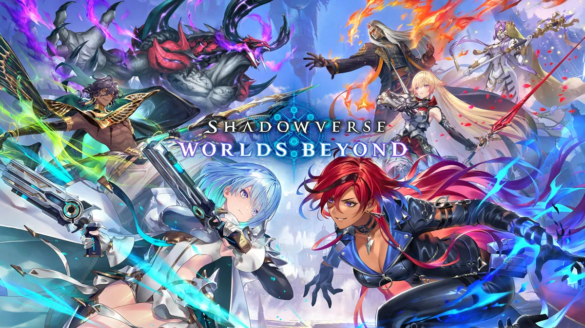
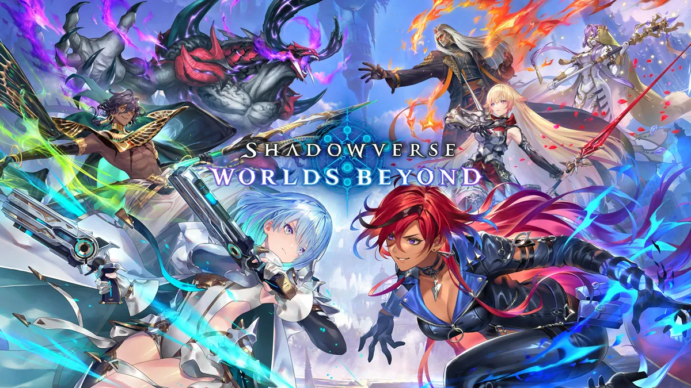

趣味
ゲーム
ゲームが4ぬほど大好きです。幅広いジャンルのゲームをやります。だらだら動画を見たり音楽を聞いたりすることも好きです。たまにカラオケも行きます。
動画&音楽
動画は、様々なジャンルのおすすめに上がってくる動画を見てます。音楽は、アニソンやゲームBGMとなぜか世代じゃないのに90年代の曲が好きです。
最近やっている or 好きなゲーム
Shadowverse: Worlds Beyond
ゲームが4ぬほど大好きです。幅広いジャンルのゲームをやります。だらだら動画を見たり音楽を聞いたりすることも好きです。たまにカラオケも行きます。
動画は、様々なジャンルのおすすめに上がってくる動画を見てます。音楽は、アニソンやゲームBGMとなぜか世代じゃないのに90年代の曲が好きです。
Shadowverse: Worlds Beyond
